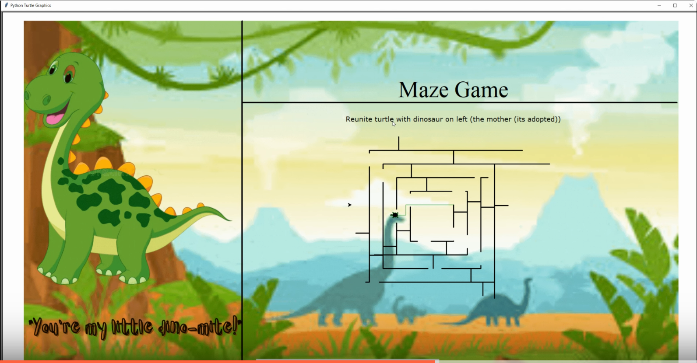
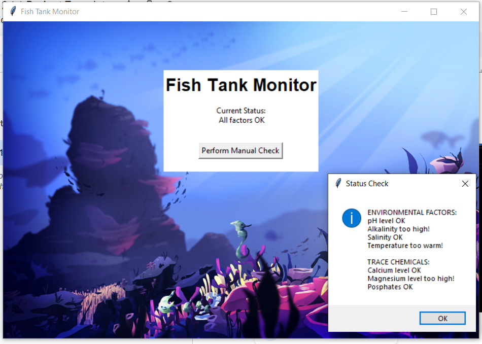
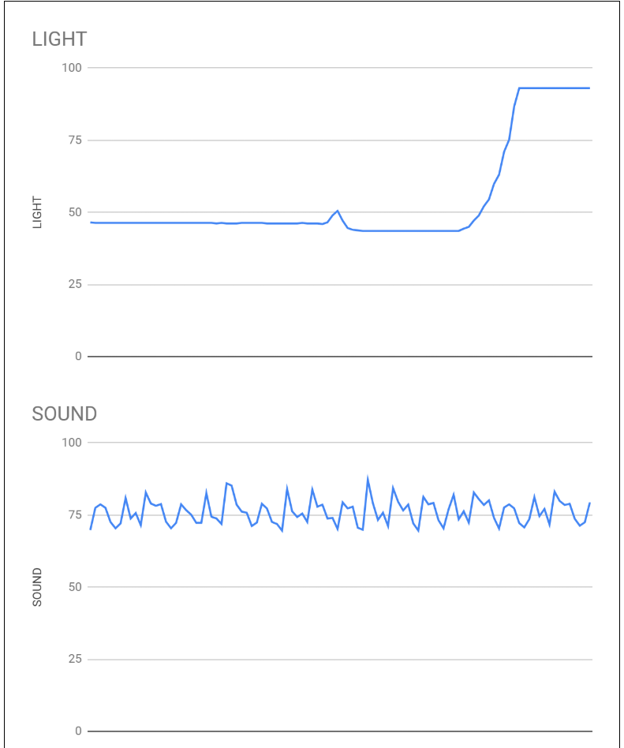
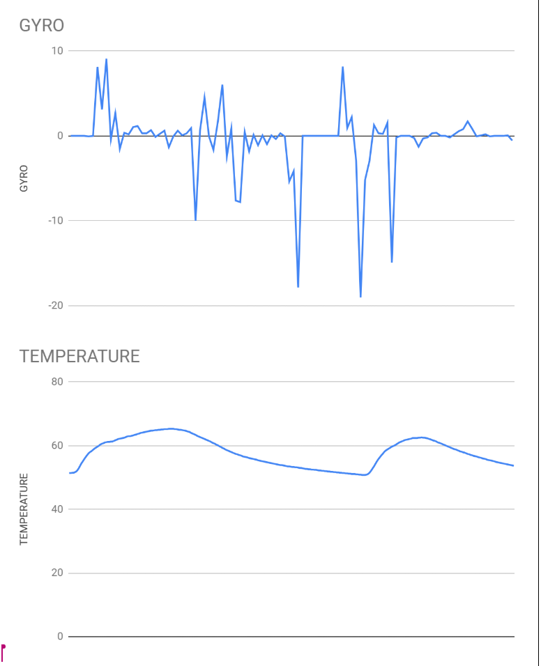
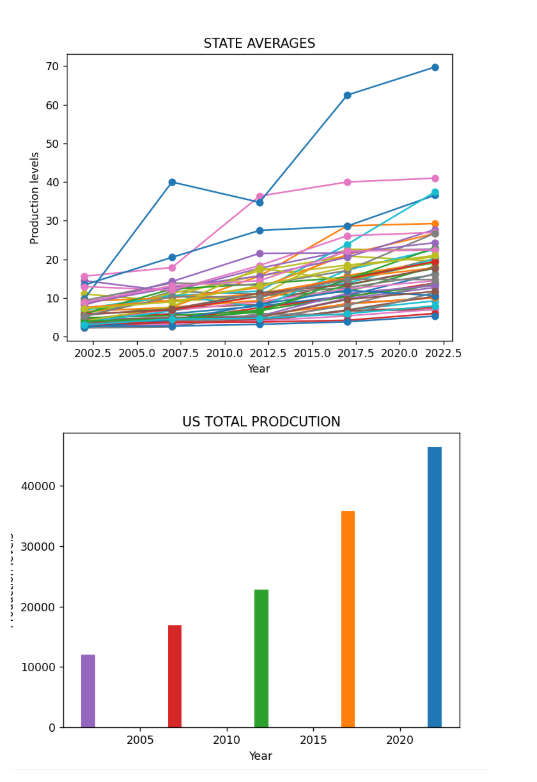

✩‧˚౨ৎ˚✩‧ portfolio ✩‧˚౨ৎ˚✩‧
home
portfolio
about me

Space Invaders: Python Game Project
Using Turtle Python to Make Maze-Dinosaur for Children's Hospital - Project 1.3.1 .

Project 2.1.6 - Fish Tank Monitor.

We looked for issues within the code and made sure to update the status of the factors in fish tank and import the correct files to the code.
Scratch Project - Ice Cream Maker
Creating an ice cream through scratch, where you can build your own ice cream by pressing the designated key assigned to each scoop or topping, and winning the game by selecting the correct topping.
3.1.6 Using data files to create graphs.


3.2.4 Honeybee Research Graphing Statistical Data - seperating the production level data through years, graphing state averages
